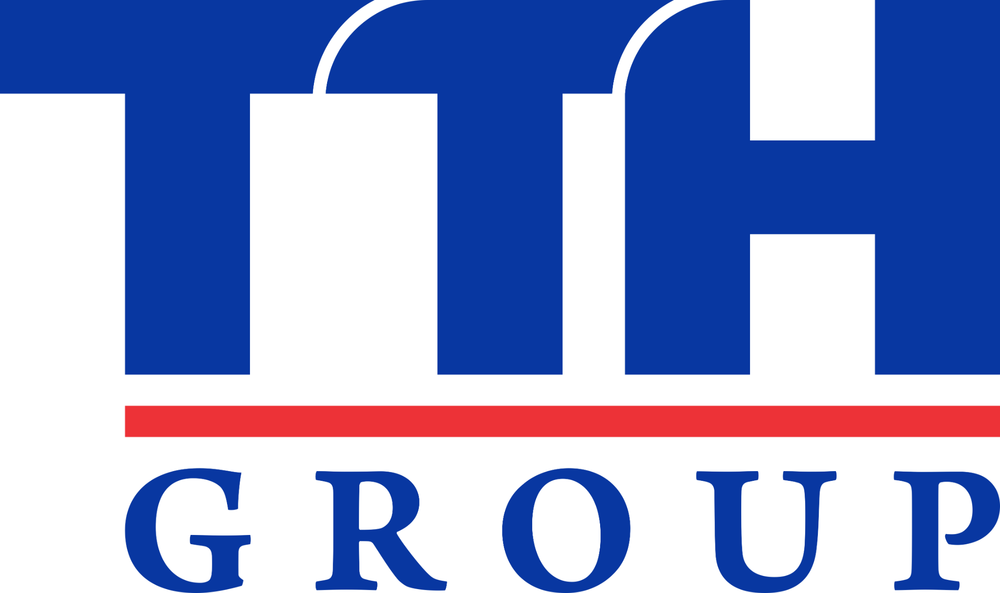

01 · Kiến trúc thương hiệu
- Phân định danh mục hiện hữu và đang nghiên cứu của TTH Healthcare và các thương hiệu chuyên khoa độc lập.
- Danh mục và tên thương hiệu được quản lý thống nhất theo kiến trúc thương hiệu toàn hệ thống.
Từ kiến trúc thương hiệu đến nhân sự, phân quyền, dữ liệu và kết quả.

Cơ cấu tổ chức, phân công trách nhiệm, quy trình phối hợp và hiệu quả vận hành
Tập trung chuyên môn tại Tổng công ty, duy trì năng lực triển khai tại bệnh viện.
TTH Healthcare bao gồm TTH Hospital, TTH Clinic; các thương hiệu chuyên khoa độc lập có nhận diện và phạm vi chuyên môn riêng.
TTH Vinh · TTH Hà Tĩnh · TTH Quảng Bình
TTH Đức Thọ · TTH Quốc tế Huế
TTH Khe Tre · TTH A Lưới
Bệnh viện Y học cổ truyền Nguyên Phúc
Bệnh viện RHM & PTTHTM Thái Thượng Hoàng
Nguyên Thảo · Nguyên Châu · Nguyên Trí · Nguyên Bách
Nguyên Tâm
Viện dưỡng lão Thái Thượng Hoàng
Một hệ thống vận hành nhưng có hai cụm thương hiệu, đối tượng khách hàng và thông điệp khác nhau.
TTH Group · TTH Healthcare · TTH Hospital · TTH Clinic
Quản lý nhất quán thương hiệu TTH, kênh chung, website và App; kết nối các bệnh viện đa khoa và phòng khám.
Ví dụ: chiến dịch dịch vụ tại TTH Hà Tĩnh dùng hình ảnh, thông điệp đúng chuẩn TTH Hospital.
Nguyên Phúc · Thái Thượng Hoàng · các thương hiệu chuyên khoa, Winmed, Tuệ Đức Thiện...
Giữ bản sắc riêng, đối tượng khách hàng và yêu cầu chuyên môn riêng; vận hành thông điệp phù hợp từng thương hiệu, từng chuyên khoa.
Ví dụ: Nguyên Phúc thực hiện video câu chuyện bác sĩ; Thái Thượng Hoàng triển khai OOH theo nhận diện riêng. Không áp mẫu TTH Hospital.
Tổ chức theo chuyên môn nghiệp vụ; các nhóm thương hiệu đặt mục tiêu và nhận kết quả theo phạm vi.
Biên tập · Thiết kế · Media
Viết, thiết kế, quay dựng; kiểm kỹ thuật và chuẩn hóa bộ mẫu để dùng lại.
Ví dụ: video hướng dẫn đăng ký khám TTH Vinh.
Chuyên viên trưởng 1 điều phối chuyên môn Nội dung – Thiết kế – Media tại Tổng công ty và các cơ sở.
Quản lý thương hiệu · Truyền thông TCT
Giữ mục tiêu, thông điệp, danh tiếng; triển khai PR, báo chí, OOH và đối tác truyền thông.
Ví dụ: TCT điều phối OOH Thái Thượng Hoàng, truyền thông bệnh viện khảo sát và nghiệm thu hiện trường.
Quảng cáo và kênh số · Quản lý sản phẩm số · Đo lường/dữ liệu
Quản trị kênh, triển khai quảng cáo, Website/App và đo hiệu quả, nguồn khách.
Ví dụ: đăng video đã duyệt, đo lượt xem và lượt đặt lịch hợp lệ.
Chuyên viên trưởng 2 phụ trách Tổ Truyền thông và Thương hiệu, Tổ Tăng trưởng số; hướng dẫn nghiệp vụ truyền thông và kênh số tại cơ sở.
Tổ trưởng Marketing tại mỗi bệnh viện trực tiếp giao việc; hai Chuyên viên trưởng phụ trách chuẩn chuyên môn theo đúng chức năng.
Quyền phê duyệt xác định theo ma trận phân quyền, độc lập với chức năng quản lý tổ.
Hai Chuyên viên trưởng phụ trách theo chức năng, phối hợp toàn hệ thống theo phân cấp và quy trình thống nhất.
Tổ trưởng kiêm nhiệm trong suất định biên, không cộng thêm người.
Tên tổ xác định theo đơn vị chủ quản; 14 suất phân bổ tại 5 bệnh viện hiện hữu.
Tổ Marketing Bệnh viện Đa khoa TTH Vinh · 03 suất
Tổ Marketing Bệnh viện Đa khoa TTH Hà Tĩnh · 03 suất
Tổ Marketing Bệnh viện Đa khoa TTH Quảng Bình · 03 suất
TTH Clinic (Khe Tre, A Lưới) thuộc Nhóm 1, có đầu mối kiêm nhiệm; không tính vào 14 suất Marketing bệnh viện. Các cơ sở mới xác lập định biên khi có quyết định.
Tổ Marketing Bệnh viện Y học cổ truyền Nguyên Phúc · 02 suất
Tổ Marketing Bệnh viện RHM & PTTHTM Thái Thượng Hoàng · 03 suất
Các thương hiệu chuyên khoa đang nghiên cứu chỉ được tính nhân sự khi có cơ cấu và định biên được phê duyệt; mỗi tổ mang tên đầy đủ của đơn vị.
Ba vị trí có chức năng, phạm vi thẩm quyền và đầu ra riêng.
Ví dụ xuyên suốt: sản xuất và đăng video hướng dẫn đăng ký khám tại TTH Vinh.
Nhận yêu cầu, xác nhận quy trình tiếp đón với khoa phòng, phân công Media cơ sở quay.
Đầu ra: dữ kiện đúng, lịch quay.
Soạn mẫu lời thoại/chữ xuất hiện; kiểm thông tin, phối hợp người xác nhận nghiệp vụ.
Đầu ra: kịch bản lời.
Cấp mẫu chữ, nền và đồ họa đúng nhận diện TTH.
Đầu ra: tệp đồ họa theo mẫu.
Ban hành mẫu phân cảnh và kiểm kỹ thuật bản dựng; làm hậu kỳ khó nếu vượt khả năng cơ sở.
Đầu ra: danh sách cảnh, QC.
Quay thực tế tại TTH Vinh, dựng theo mẫu, gửi bản hoàn chỉnh để kiểm.
Đầu ra: file video + tư liệu gốc.
Phối hợp điều kiện hiện trường, truyền thông nội viện nếu sản phẩm được duyệt phát tại bệnh viện.
Công đoạn quay/dựng do Media phụ trách.
Video hướng dẫn đăng ký khám TTH Vinh: một mã việc, kiểm tra độc lập và phê duyệt trước phát hành.
Quản lý thương hiệu nhóm 1 xác định mục tiêu/kênh; Tổ trưởng Marketing BVĐK TTH Vinh nhận phiếu và phân công quay tại chỗ.
Biên tập TCT quản lý mẫu lời; Media TCT mẫu phân cảnh; Media cơ sở quay và dựng video hoàn chỉnh đúng mẫu.
Bộ phận tiếp đón xác nhận đúng thủ tục; Biên tập kiểm chữ; Media TCT kiểm hình, tiếng và phiên bản.
Quản lý thương hiệu nhóm 1 xác nhận video đúng thông điệp, kênh, yêu cầu; không phải quyền cho đăng.
Người được phân quyền duyệt sản phẩm thường xuyên đúng mẫu; nội dung mới hoặc nhạy cảm trình Trưởng phòng Marketing và cấp có thẩm quyền theo phân cấp.
Chuyên viên Quảng cáo và Kênh số nhóm 1 đăng đúng file; Đo lường & Đối soát xác minh kết quả.
Quy trình thể hiện rõ vai trò kiểm tra, chủ thể nghiệm thu, cấp duyệt và người thực hiện đăng.
Bác sĩ hoặc đơn vị nghiệp vụ: xác nhận y khoa, quy trình thực tế.
Biên tập: kiểm lời, chữ; Media TCT: kiểm kỹ thuật video; Thiết kế: kiểm file.
Quản lý thương hiệu đúng nhóm: xác nhận đúng đề bài, thông điệp, định dạng, số lượng, thời hạn.
Nghiệm thu ≠ phê duyệt phát hành.
Chuyên viên trưởng đúng tuyến (khi có phân quyền): chỉ với sản phẩm thường xuyên đúng mẫu và có văn bản phân quyền hợp lệ.
Trưởng phòng Marketing: nội dung mới/nhạy cảm, phim chiến dịch theo phạm vi được giao; vượt quyền thì trình Ban Tổng Giám đốc.
Quảng cáo và Kênh số đúng nhóm: đăng kênh số sau duyệt. Truyền thông TCT: phát hành báo chí/ngoại tuyến; cơ sở phát nội viện.
Chi phí: BGĐ cơ sở hoặc cấp TCT được phân cấp duyệt riêng; người đăng không được duyệt chi.
Mức phân loại nói về cách sản xuất và độ phức tạp, không tự tạo quyền duyệt riêng.
Là gì? Tin ảnh/clip ngắn về hoạt động đã diễn ra, không có ca bệnh hoặc nội dung quảng cáo dịch vụ.
Ví dụ: TTH Hà Tĩnh tổ chức buổi tư vấn cộng đồng; Media cơ sở quay/cắt, Trưởng nhóm đăng tin đúng danh mục đã được phân quyền.
Là gì? Video có mẫu lời (nói gì) và mẫu phân cảnh (quay cảnh nào, dài bao lâu) do TCT chuẩn hóa.
Ví dụ: hướng dẫn đến quầy tiếp đón tại TTH Vinh; Media cơ sở quay và dựng hoàn chỉnh theo mẫu.
Là gì? Video có kịch bản riêng, nhân vật thật, cần xác minh thông tin và xử lý hình/tiếng kỹ hơn.
Ví dụ: bác sĩ Nguyên Phúc giải thích chủ đề chăm sóc sức khỏe phù hợp chuyên khoa; Biên tập TCT viết lời, Media cơ sở quay theo phân cảnh, TCT kiểm.
Là gì? Phim nhiều cảnh/địa điểm, hậu kỳ chuyên sâu, phục vụ chiến dịch hoặc cấp toàn hệ thống.
Ví dụ: phim TTH Hospital với tư liệu từ Vinh, Hà Tĩnh, Quảng Bình; TCT chủ trì dựng hoàn chỉnh.
V2 là video sản xuất theo mẫu, minh họa bằng hướng dẫn tiếp đón tại TTH Vinh (25–30 giây).
0–5 giây: “Lần đầu đến khám tại Bệnh viện Đa khoa TTH Vinh?”
6–13 giây: “Vui lòng đến khu vực tiếp đón để được nhân viên hướng dẫn.”
14–22 giây: “Thực hiện các bước đăng ký theo hướng dẫn tại cơ sở.”
23–30 giây: “Xem thông tin và liên hệ qua kênh chính thức của bệnh viện.”
Biên tập TCT nhóm 1 giữ mẫu lời; Trưởng nhóm cơ sở điền dữ kiện đã xác nhận.
Cảnh 1: toàn cảnh lối vào, chữ mở đầu (5 giây).
Cảnh 2: khu vực tiếp đón, nhân viên hướng dẫn (8 giây).
Cảnh 3: thao tác đăng ký minh họa, không lộ dữ liệu bệnh nhân (9 giây).
Cảnh 4: logo, kênh liên hệ chính thức (8 giây).
Media TCT nhóm 1 chuẩn hóa danh sách cảnh; Media TTH Vinh quay và dựng.
V2 và V3 khác cách làm, nhưng đều phải qua kiểm độc lập, nghiệm thu và duyệt phát hành.
Ví dụ minh họa phân việc và phân quyền theo cùng chuẩn kiểm soát; không dùng nhận diện của TTH Hospital.
Truyền thông TCT nhóm 1 chủ trì nghiệp vụ OOH; bệnh viện cung cấp dữ kiện và tổ chức triển khai hiện trường.
Mỗi công đoạn có một đầu mối chủ trì và các vị trí phối hợp theo chức năng.
Truyền thông cơ sở thực hiện vận hành tại bệnh viện; Media phụ trách sản xuất sản phẩm.
Phục vụ Marketing toàn TTH Group, gồm hệ TTH và các thương hiệu khác; dữ liệu báo cáo thống nhất, không cộng trùng.
Mục tiêu · ngân sách · chủ kết quả · mốc · hoạt động · sản phẩm.
Kế hoạch tháng · yêu cầu · phân công · vòng duyệt · kết quả.
Báo cáo kỳ tự tổng hợp từ công việc đã phát sinh và được đối soát.
Sản phẩm, số giờ, đúng hạn, tồn đọng, chất lượng.
Tải công việc, năng lực, vòng sửa, công suất thực tế.
Hạng mục, chiến dịch, đầu ra, nguồn khách theo danh mục.
Hoạt động địa phương, nguồn khách, truyền thông tại chỗ.
Tiến độ hai phân hệ, ngân sách, kết quả, đối soát KPI.
Phần mềm quản trị Marketing áp dụng toàn TTH Group; Website/App TTH Healthcare phục vụ hệ khám chữa bệnh. Dữ liệu khách hàng có phân quyền.
Thông tin cơ sở, dịch vụ, bác sĩ, bài viết — dữ liệu có nguồn xác nhận trước công bố.
Điểm chạm số phục vụ người dùng; phân quyền theo chức năng và mục đích hợp pháp.
Hồ sơ cơ bản trong phạm vi pháp luật cho phép, nguồn tiếp nhận, trạng thái nhu cầu, đối soát.
Cổng tiếp nhận yêu cầu từ xa tập trung toàn hệ thống; là đơn vị vận hành độc lập với Marketing.
Contact Center chủ trì vận hành và quản lý kịch bản; Marketing kiểm thông điệp trong phạm vi được phân công.
Chỉ tiêu định lượng được xác lập trên dữ liệu thực tế có nguồn đối soát.
Chuẩn hóa danh mục, tên thương hiệu và nhận diện.
Ưu tiên theo năng lực từng bệnh viện, pháp lý và nhu cầu.
Chuẩn hóa lời, hình, video, xác nhận và kiểm độc lập.
Đối tác hợp pháp, cộng đồng, học đường và giới thiệu.
Tối ưu hành trình từ quan tâm tới nhu cầu khám hợp lệ.
Chín trọng tâm gắn trực tiếp thương hiệu, tăng trưởng y tế, bộ máy và hệ thống số.
Chuẩn nguồn, trạng thái, đồng ý và bàn giao Contact Center.
Đồng nhất danh mục, phân quyền cập nhật, nghiệm thu.
Vận hành 3 tổ–2 nhóm, đo tải, đào tạo và kiểm định biên.
Một dữ liệu xuyên hai phân hệ, báo cáo đối soát.
Các ngưỡng KPI năm 2027 cần dữ liệu nền thực đo trước khi giao chỉ tiêu.
3 tổ – 2 nhóm, 22 TCT + 14 cơ sở, 2 phân hệ + 4 phần nền.
Thời gian từng đầu ra, năng suất theo người, chất lượng Lead, dữ liệu nền KPI.
Việc triển khai thực hiện theo quyết định phê duyệt và văn bản phân cấp có hiệu lực.
Trình phê duyệt cơ cấu 02 Chuyên viên trưởng, 03 tổ chuyên môn, Tổ Marketing bệnh viện và định biên 36 suất.
Phân định chủ trì, kiểm tra, nghiệm thu, duyệt phát hành và chi phí theo từng loại việc.
Thống nhất hai phân hệ, bốn phần nền, mã hồ sơ và báo cáo đối soát.
Phân công chủ kết quả, quy định chỉ số KPI, dữ liệu nền và lộ trình triển khai.